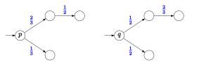

Bisimulation on Distributions
for Reinforcement Learning
Who am I?
A Logician at the
Alan Turing Institute
of Data Science, London
Thanks to them:


The virtuous circle

Automata Analysis
An automaton is a
Markov Decision Process

Making things simple before learning them
- Start from an MDP $\mathcal{M}$
- Let $\mathcal{M}'$ be the
quotient of $\mathcal{M}$ by $\sim$ - Learn $\mathcal{M}'$
Transfer the results from $\mathcal{M}'$ to $\mathcal{M}$
Probabilistic Bisimulation (Larsen, Skou)
Definition: $p \sim q$ just if $\forall a \in A, \forall C \in [S]_\sim,\ \tau(p,a)(C) = \tau(q,a)(C)$.

Transfer results
Bisimulation is extended to a bisimulation metric.
Theorem (Castro, Precup, Panangaden) The difference in Q-values is bounded by the bisimulation metric.
Bisimulation on Distributions
Definition: $p \sim_D q$ just if $\forall a \in A,\ \tau(p,a) \sim_D \tau(q,a)$. 
- $p \sim q$ implies $p \sim_D q$, but not conversely
- equivalent to
Trace Equivalence :
$p \sim_D q$ if, and only if, $\forall w \in A^*, P(w|p) = P(w|q)$
What transfer results?
- What metric?
- How do we transfer policies?